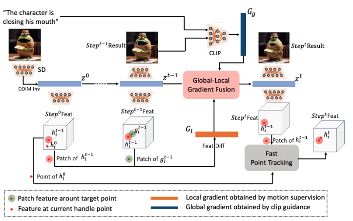
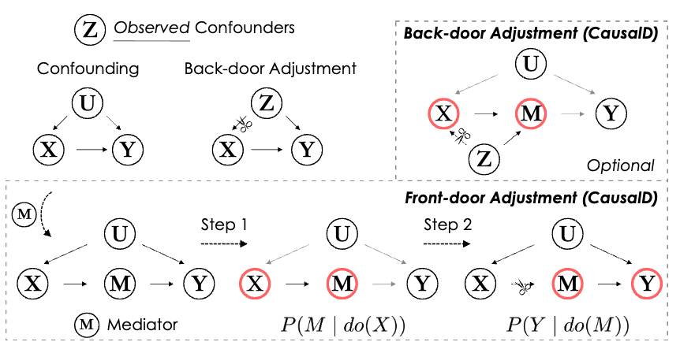
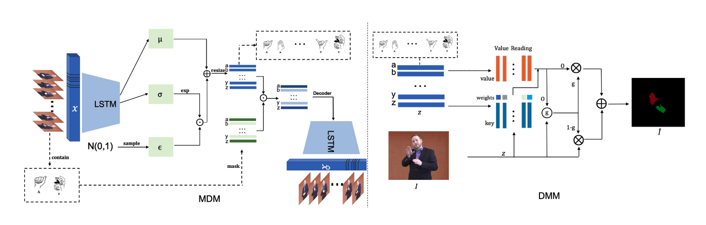

|
Ziqi Jiang
I'm a PhD student at Long Group, HKUST, advised by Long Chen. Previouly I got my B.S. degree from ZheJiang University.
My research interests lie in computer vision, machine learning, with a special focus on grenative models, both their theory and applications.
Email /
Scholar
|
|
|

|
CLIPDrag: Combining Text-based and Drag-based Instructions for Image Editing
Ziqi Jiang,
Zhen Wang,
Long Chen
ICLR, 2025
paper /
code
We propose CLIPDrag, a solution that incorporates text signals into drag-based methods by using text signals as global information
|
|

|
Causal Distillation for Alleviating Performance Heterogeneity in Recommender Systems
Shengyu Zhang, Ziqi Jiang, Jiangchao Yao, Fuli Feng, Kun Kuang, Zhou Zhao, Shuo Li, Hongxia Yang, Tat-Seng Chua, Fei Wu
TKDE, 2023
paper
We propose a causal multi-teacher distillation(CausalD) framework, which realizes FDA to estimate the causal effect and preserves the inference efficiency.
|
|

|
Weakly-supervised Disentanglement Network for Video Fingerspelling Detection
Ziqi Jiang, Shengyu Zhang, Siyuan Yao, Wenqiao Zhang, Sihan Zhang, Juncheng Li, Zhou Zhao, Fei Wu
ACM MM, 2022
paper
We devise a novel WED framework that disentangles fingerspelling letter representations through VAE and masked reconstruction, followed by the DMM that leverages the disentangled knowledge for detection and recognition as humans do.
|
|
{kind=link}